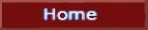
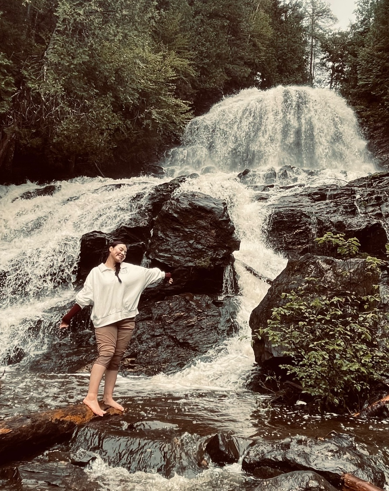
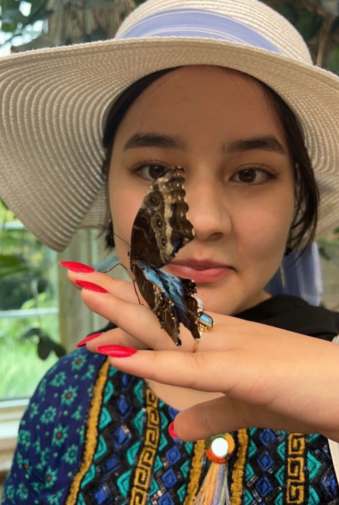
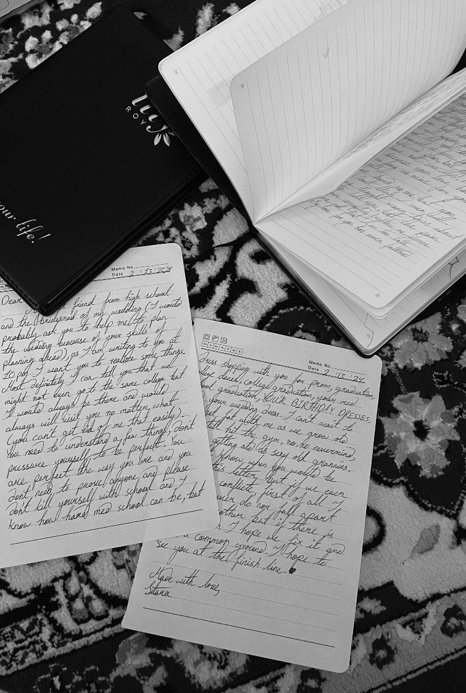

|  |
|
|
About me
I came to America about 5 years ago and got my citizenship a month ago. I cant wait to get my American passport and travel around the world with my siblings. I have one brother, his name is Arman like the luxury brand and a baby sister, her name is Tabassum (she is the cutest and smartest 3 year old that I know).
I love reading and writing poems (because I am a hopeless romantic who likes to day dream a lot 🤭), but I also love going to new places and getting connected to nature, I love how animals can trust me enough to let me pet them or how much butterflies and ladybugs land on me.
Here is one of my poems that I am very proud of....
Mesmerizing the cherry blossoms are,
They cease to fall when April parts.
A heavenly voice soars up into the sky.
Tis the crying of a caged bird in tears.
How helpless this life is, between the moon and sea.
Beside the waves I’ll wait, and sing my song for thee.
Thank you for taking your time to know more about me. Stay tuned to learn more.